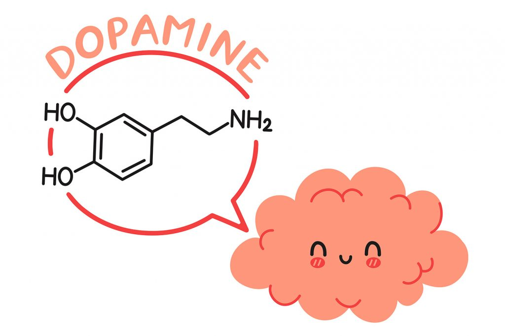
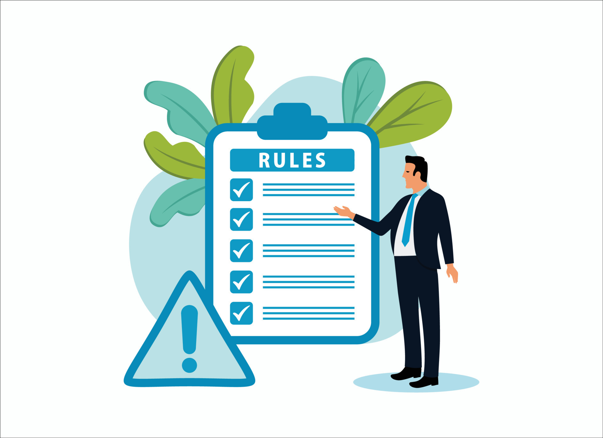
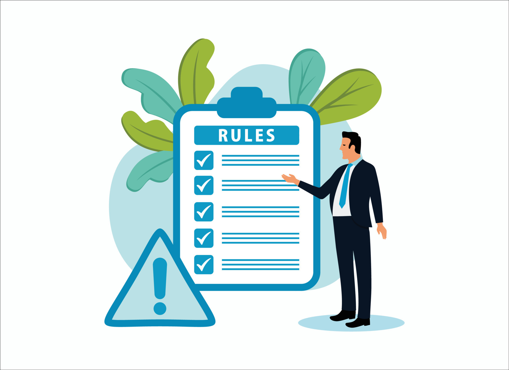

PROCESO DE LA TOMA DE DECISIONES
Objetivo
Al estudiar el proceso racional de toma de decisiones, se espera que los usuarios desarrollen la capacidad de: Identificar las etapas clave del proceso: Desde el reconocimiento de la necesidad de una decisión hasta la evaluación de los resultados obtenidos. Aplicar técnicas analíticas: Utilizar herramientas y metodologías que faciliten la generación y comparación de alternativas. Tomar decisiones fundamentadas: Basar las elecciones en datos y criterios objetivos, minimizando la influencia de prejuicios y emociones. Implementar y monitorear decisiones: Desarrollar habilidades para ejecutar decisiones de manera efectiva y realizar ajustes según los resultados obtenidos. Mejorar la efectividad en la resolución de problemas: Aplicar un enfoque racional que permita abordar de manera eficiente situaciones complejas en diferentes contextos.

Introducción
El proceso racional de toma de decisiones es un enfoque sistemático que busca optimizar la elección entre diversas alternativas mediante un análisis lógico y estructurado. Este proceso es fundamental tanto en contextos personales como organizacionales, ya que permite abordar problemas y oportunidades de manera metódica, minimizando el impacto de sesgos y emociones en la toma de decisiones. A través de la identificación, evaluación y selección de opciones basadas en criterios objetivos, el proceso racional garantiza que las decisiones sean informadas, coherentes y alineadas con los objetivos deseados.
Desarrollo
¿En qué consiste el proceso racional de la toma de decisiones?
El proceso racional de la toma de decisiones es un enfoque sistemático y lógico utilizado por los administradores para asegurar que las decisiones se tomen de manera efectiva y eficiente. Este proceso se divide en varias etapas clave que permiten una evaluación cuidadosa de las opciones disponibles y la selección de la mejor alternativa posible. Según el documento, las etapas del proceso racional de toma de decisiones son las siguientes:

Tipos de procesos para la toma de decisiones
Los tipos de procesos para la toma de decisiones mencionados incluyen: Decisión programada: Estas son decisiones repetitivas y rutinarias que pueden ser manejadas mediante un método predefinido. Ejemplos incluyen la reordenación de inventarios y la gestión de recursos diarios. Estas decisiones se basan en procedimientos y reglas establecidas. Decisión no programada: Estas son decisiones únicas y no estructuradas que requieren un enfoque personalizado. Ejemplos incluyen la reestructuración de una organización o la creación de una estrategia de mercado para un nuevo producto. Estas decisiones suelen involucrar una mayor incertidumbre y complejidad. Decisión individual: Decisiones tomadas por una persona, basadas en su juicio y experiencia personal. Decisión de grupo: Decisiones que involucran la participación de varias personas, aprovechando la diversidad de perspectivas y conocimientos. Decisión organizacional: Decisiones que afectan a toda la organización y suelen ser tomadas por los altos directivos. Decisión de emergencia: Decisiones que deben ser tomadas rápidamente en situaciones críticas o inesperadas. Decisión de rutina: Decisiones cotidianas que no requieren mucho análisis, como la aprobación de gastos menores. Decisión personal: Decisiones que afectan principalmente al individuo que las toma. Decisión intuitiva: Decisiones basadas en la intuición o el instinto, más que en un análisis racional detallado

¿En qué consiste el proceso creativo de la toma de decisiones?
El proceso creativo en la toma de decisiones no es lineal y se compone de varias fases interactivas que facilitan la generación de ideas innovadoras y soluciones originales. Este proceso incluye las siguientes fases: Exploración inconsciente: Esta fase ocurre fuera de la conciencia activa y es donde se generan ideas y soluciones de manera subconsciente. Es un proceso en el que la mente trabaja en segundo plano, procesando información y generando conexiones inesperadas. Intuición: Actúa como un enlace entre el inconsciente y la conciencia. Es el momento en el que una idea o solución emergente llega a la mente consciente, a menudo de manera súbita o como una "corazonada". Discernimiento: Resultado del trabajo intenso y enfocado en el problema. En esta fase, las ideas generadas son refinadas, evaluadas y desarrolladas mediante un esfuerzo consciente y deliberado. Formulación lógica: Se logra mediante la reflexión persistente en una idea y solicitando críticas y opiniones de los demás. En esta fase, las ideas creativas se estructuran y se evalúan de manera lógica y sistemática, asegurando que sean viables y efectivas. Este proceso creativo es fundamental para abordar problemas complejos y encontrar soluciones innovadoras que no serían posibles mediante un enfoque puramente racional y lineal
¿Cuál es la parte del cerebro responsable de la toma de decisiones?
se explica que la corteza prefrontal es la parte del cerebro responsable de la toma de decisiones. Esta región es crucial para el procesamiento de información, evaluación de alternativas y la regulación de emociones durante la toma de decisiones. Además, el video menciona que las emociones desempeñan un papel fundamental en el proceso, ya que la corteza prefrontal trabaja en conjunto con el sistema límbico para integrar información racional y emocional, ayudando así a tomar decisiones más equilibradas y efectivas.
¿Qué papel juega la dopamina en la toma de decisiones?
La dopamina juega un papel crucial en la toma de decisiones al actuar como un neurotransmisor que influye en la motivación y el placer. Este neurotransmisor ayuda al cerebro a evaluar las recompensas potenciales de diferentes opciones, facilitando la predicción de resultados positivos y negativos. Cuando una persona anticipa una recompensa, la dopamina se libera en áreas específicas del cerebro, como el núcleo accumbens, lo que refuerza comportamientos y decisiones que podrían conducir a esa recompensa. Esto significa que la dopamina contribuye a la evaluación y selección de alternativas en función de sus beneficios esperados.
¿Cuales son los tipos de decisiones a las que nos enfrentamos según el video?
Decisiones Programadas: Son decisiones que se toman regularmente y que se pueden prever y planificar con antelación. Por lo general, se basan en políticas, reglas y procedimientos establecidos. Decisiones No Programadas: Estas decisiones son únicas y menos predecibles. Requieren un enfoque más flexible y creativo porque no están cubiertas por políticas o procedimientos existentes. Decisiones Tácticas: Son decisiones que se toman a nivel intermedio de la organización y que afectan a la forma en que se implementan las estrategias. Decisiones Estratégicas: Estas decisiones tienen un impacto a largo plazo y afectan a la dirección general de la organización. Son cruciales para el desarrollo y éxito futuro de la organización. Decisiones Operativas: Se refieren a decisiones diarias que afectan el funcionamiento regular de la organización. Son más detalladas y se toman en el nivel operativo.
¿ Cuales son los recursos que ocupamos al tomar decisiones?
Al tomar decisiones, se utilizan varios recursos clave que ayudan a hacer elecciones informadas y efectivas. Estos recursos incluyen:
Información: Datos relevantes y precisos son cruciales para tomar decisiones. Esto puede incluir investigaciones previas, análisis de datos, informes y cualquier otro tipo de información pertinente.
 Tiempo: El tiempo disponible para tomar una decisión puede influir en la calidad de la misma. Algunas decisiones requieren un análisis detallado, mientras que otras deben tomarse rápidamente.
Experiencia y Conocimiento: La experiencia previa y el conocimiento en un área específica pueden ayudar a anticipar resultados y evaluar las opciones de manera más efectiva.
Tiempo: El tiempo disponible para tomar una decisión puede influir en la calidad de la misma. Algunas decisiones requieren un análisis detallado, mientras que otras deben tomarse rápidamente.
Experiencia y Conocimiento: La experiencia previa y el conocimiento en un área específica pueden ayudar a anticipar resultados y evaluar las opciones de manera más efectiva.
 Recursos Financieros: La disponibilidad de recursos financieros puede influir en las opciones disponibles y en la implementación de la decisión.
Recursos Financieros: La disponibilidad de recursos financieros puede influir en las opciones disponibles y en la implementación de la decisión.
 Opiniones y Consejos: Consultar con expertos, colegas o partes interesadas puede proporcionar perspectivas valiosas y ayudar a considerar diferentes puntos de vista.
Herramientas y Tecnologías: Utilizar herramientas analíticas, software de gestión de decisiones, modelos predictivos y otras tecnologías puede facilitar el proceso de toma de decisiones.
Capacidades y Habilidades del Equipo: Las habilidades y capacidades del equipo que está involucrado en el proceso de toma de decisiones también son importantes. Un equipo bien capacitado puede aportar diferentes habilidades y conocimientos.
Opiniones y Consejos: Consultar con expertos, colegas o partes interesadas puede proporcionar perspectivas valiosas y ayudar a considerar diferentes puntos de vista.
Herramientas y Tecnologías: Utilizar herramientas analíticas, software de gestión de decisiones, modelos predictivos y otras tecnologías puede facilitar el proceso de toma de decisiones.
Capacidades y Habilidades del Equipo: Las habilidades y capacidades del equipo que está involucrado en el proceso de toma de decisiones también son importantes. Un equipo bien capacitado puede aportar diferentes habilidades y conocimientos.
 Normas y Políticas: Las normas y políticas establecidas por la organización o por la normativa legal también deben tenerse en cuenta al tomar decisiones.

Evaluación de Riesgos: Evaluar los riesgos asociados con cada opción ayuda a anticipar problemas potenciales y a desarrollar estrategias para mitigarlos.
Normas y Políticas: Las normas y políticas establecidas por la organización o por la normativa legal también deben tenerse en cuenta al tomar decisiones.

Evaluación de Riesgos: Evaluar los riesgos asociados con cada opción ayuda a anticipar problemas potenciales y a desarrollar estrategias para mitigarlos.
Apoyo didactico
Aqui se muestran algunos recursos de apoyo para el fortalecimiento del aprendizaje
Conclusión
El proceso de toma de decisiones es un enfoque estructurado que implica la identificación de problemas, la recopilación y análisis de información, la evaluación de alternativas y la selección de la mejor opción basada en criterios específicos. Un proceso de toma de decisiones efectivo combina tanto enfoques racionales como creativos para abordar problemas complejos y dinámicos. Un enfoque racional de la toma de decisiones se basa en el análisis lógico y objetivo, permitiendo evaluar sistemáticamente las alternativas y anticipar las consecuencias a corto y largo plazo. Este método es valioso para decisiones que requieren precisión y previsibilidad. Sin embargo, para problemas complejos o inéditos, el proceso creativo juega un papel crucial, fomentando la generación de ideas innovadoras y soluciones alternativas que podrían no ser evidentes a través de un análisis puramente lógico. Las cualidades importantes en la toma de decisiones incluyen la capacidad para manejar la incertidumbre, tomar decisiones de manera oportuna, y mantener la flexibilidad y adaptabilidad. La confianza en uno mismo y en el proceso también son cruciales para la toma de decisiones efectiva. No obstante, diversos factores pueden obstaculizar el proceso de toma de decisiones, como sesgos cognitivos, falta de información, presión de tiempo y barreras emocionales. Superar estas barreras requiere autoconciencia, una evaluación crítica de las influencias externas e internas, y el desarrollo de habilidades para manejar la complejidad y el riesgo. En última instancia, el proceso de toma de decisiones es un ciclo continuo de aprendizaje y adaptación. La capacidad para reflexionar sobre las decisiones pasadas, aprender de los errores y ajustar las estrategias futuras es esencial para mejorar continuamente la eficacia en la toma de decisiones. El éxito en la toma de decisiones depende de una combinación equilibrada de análisis racional y creatividad, junto con la habilidad para manejar las barreras y mantener una perspectiva adaptativa y reflexiva.
Actividad Practica
Preguntas de reflexion
¿Estoy abordando la decisión correcta o hay problemas subyacentes que no he considerado?
¿Cómo evalúo la calidad y la relevancia de la información que tengo?
¿Estoy sesgado por la disponibilidad de información en lugar de su calidad?
¿He anticipado las posibles consecuencias a corto y largo plazo de cada alternativa?
Actividad Evaluativa
Ahora pondremos a prueba tus conocimientos
Presiona aqui para realizar la prueba